Cartes 100 % hors ligne
Téléchargez la cartographie, les sentiers, les POI et les services d'une région. Quatre niveaux de détail — Eco, Standard, Détaillé, Max — pour ajuster précision et espace de stockage.
Projet « Promotion d'un écotourisme adapté aux changements climatiques » : l'application officielle des sentiers du Nord-Ouest tunisien. Cartes 100 % hors ligne, SOS géolocalisé, patrimoine naturel et économie locale solidaire.
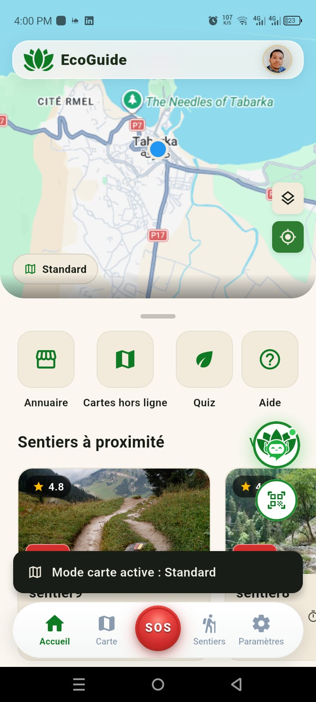
Conçue pour les sentiers et la biodiversité du Nord-Ouest tunisien, EcoGuide réunit sécurité, pédagogie et économie locale solidaire dans une seule application.
Téléchargez la cartographie, les sentiers, les POI et les services d'une région. Quatre niveaux de détail — Eco, Standard, Détaillé, Max — pour ajuster précision et espace de stockage.
Un appui maintenu 3 secondes transmet votre position exacte, votre altitude et la précision GPS — avec un message libre et vos contacts d'urgence à portée de pouce.
Certains itinéraires sensibles restent verrouillés et ne s'ouvrent qu'en scannant le QR code remis par un guide agréé — un accès encadré qui protège les zones fragiles.
Points de vue, flore, faune et patrimoine géolocalisés, avec photo, vidéo, coordonnées et itinéraire. Du Cerf de Barbarie aux forêts humides de Chêne Zéen.
Des quiz par catégorie — Flore, Faune, patrimoine — avec score total, taux de réussite et progression. Apprendre l'écosystème en marchant.
Un annuaire des artisans, produits locaux et guides de la SMSA, avec distance et contact — pour que la randonnée profite directement au territoire.
Une interface lisible en plein soleil, utilisable avec des gants, et qui reste claire jusque dans les situations d'urgence.
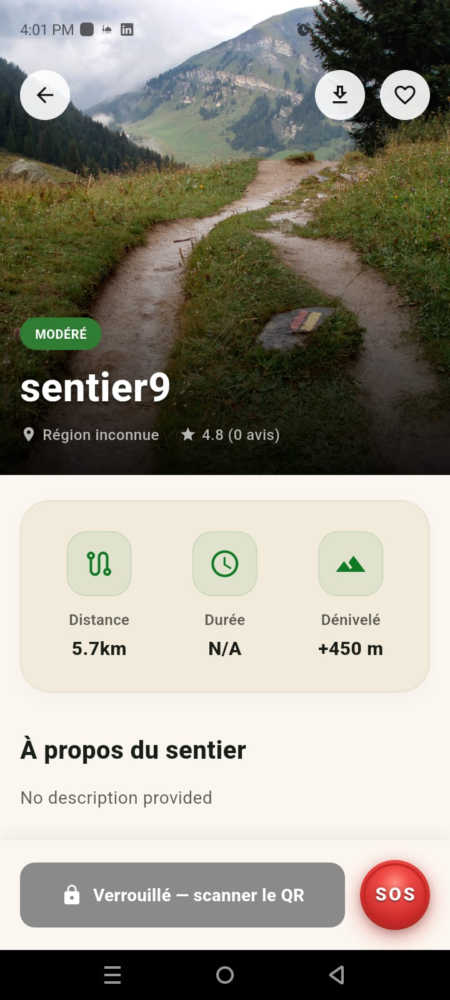
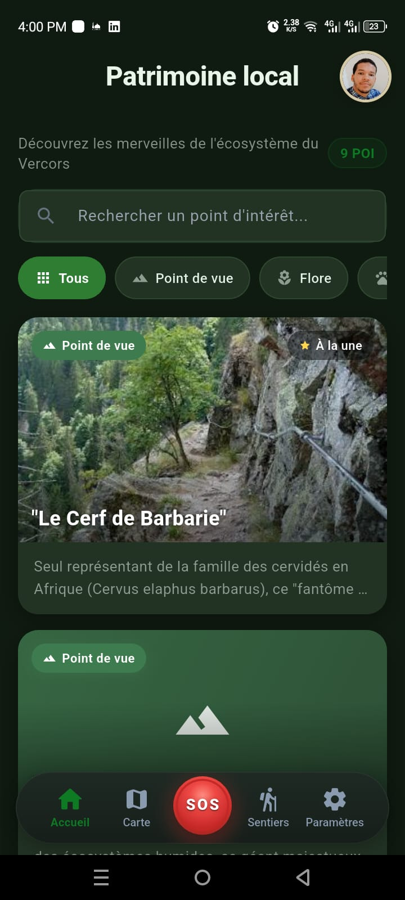
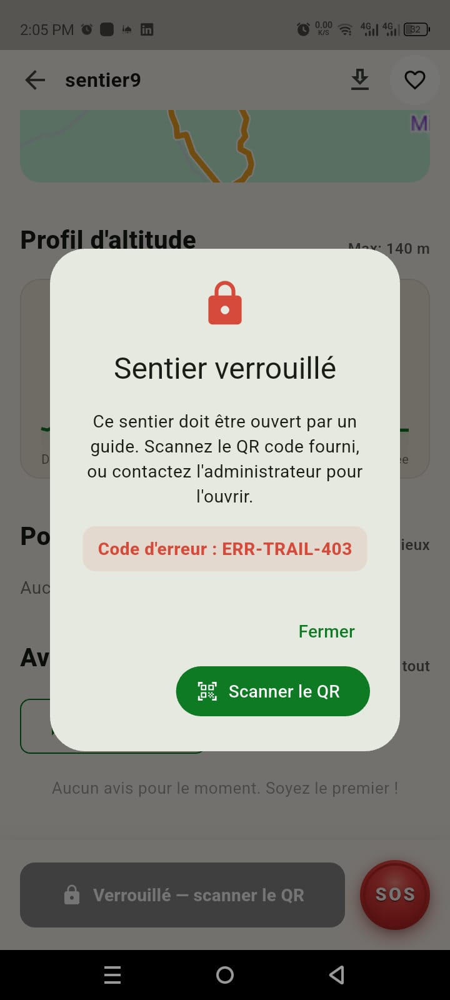
Aucun point d'intérêt
Aucun avis pour le moment. Soyez le premier !
Ce sentier doit être ouvert par un guide. Scannez le QR code fourni, ou contactez l'administrateur.
Code d'erreur : ERR-TRAIL-403 Fermer ⛶ Scanner le QR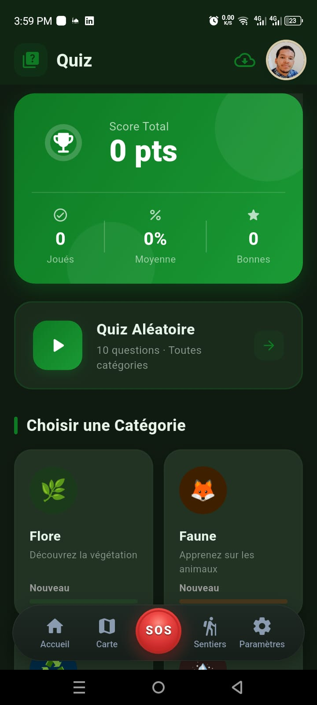
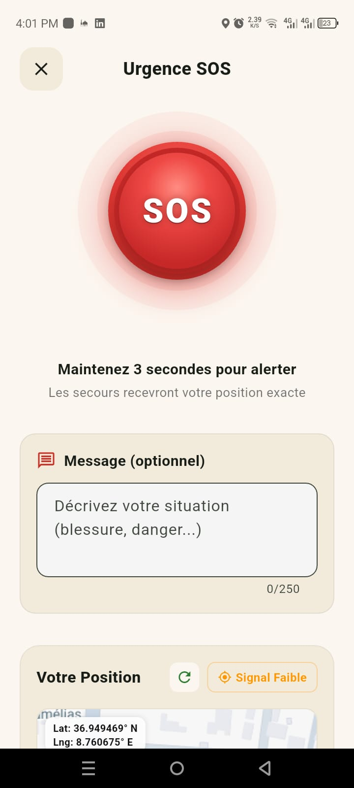
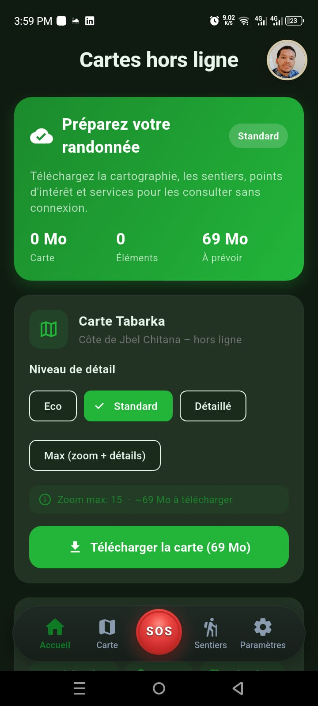
Téléchargez cartographie, sentiers, POI et services pour les consulter sans connexion.
0 MoCarte0Éléments69 MoÀ prévoir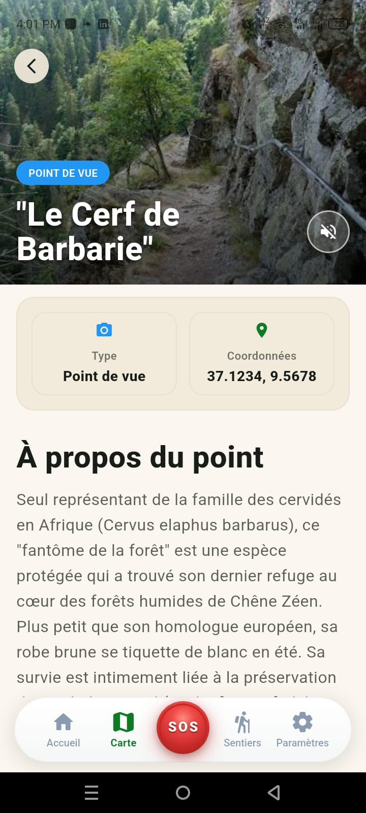
Seul représentant de la famille des cervidés en Afrique (Cervus elaphus barbarus), ce « fantôme de la forêt » a trouvé son dernier refuge au cœur des forêts humides de Chêne Zéen…
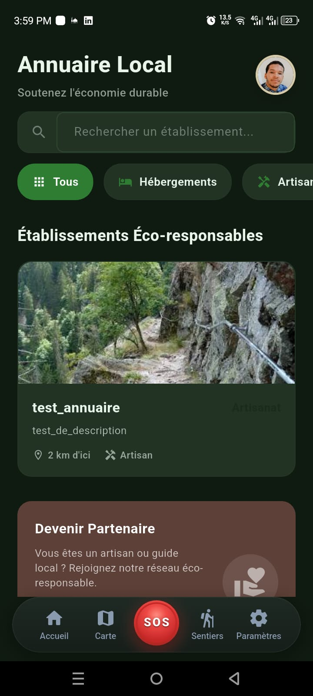
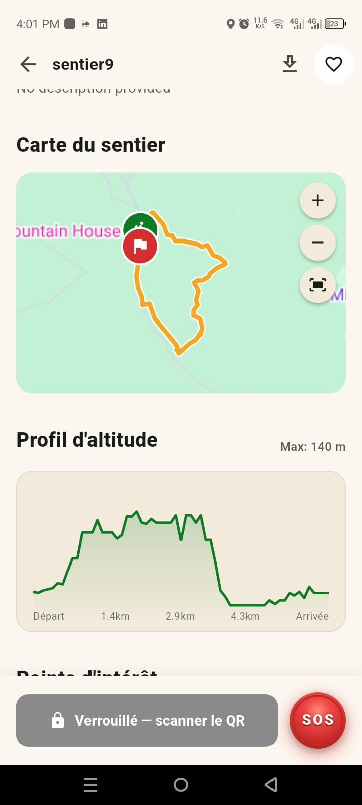
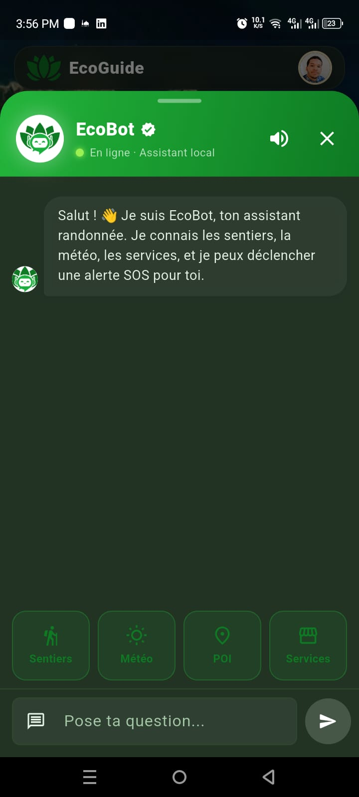
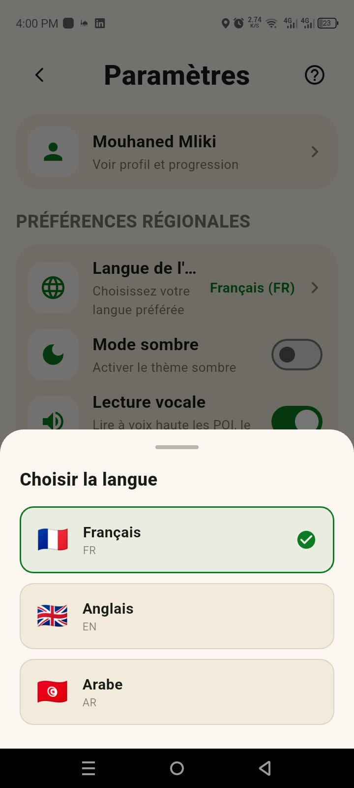
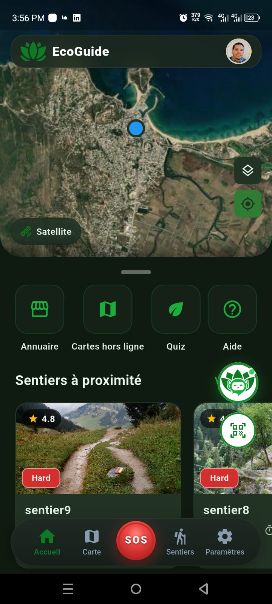
Cinquante secondes filmées dans l'application, du choix du sentier à l'alerte d'urgence.
Suivez le sentier — de la préparation au sommet, EcoGuide vous accompagne à chaque étape.
Filtrez par difficulté, distance et durée. Chaque fiche donne le profil d'altitude, la carte du tracé, les points d'intérêt et les avis de la communauté.
Choisissez votre niveau de détail — d'Eco à Max — et embarquez cartographie, sentiers et POI. Plus besoin de réseau une fois en forêt.
Les itinéraires sensibles sont verrouillés : un QR code remis par votre guide agréé les déverrouille. Un accès encadré qui protège les zones fragiles.
Guidage temps réel, points d'intérêt racontés à voix haute, alertes de sentier — et le bouton SOS toujours accessible en bas de l'écran.
Quiz Flore et Faune, score total, taux de réussite et historique. Chaque sortie vous rapproche du randonneur éco-expert.
EcoGuide n'est pas qu'un GPS : c'est un outil d'écotourisme solidaire, pensé pour préserver les forêts et le littoral du Nord-Ouest tunisien et faire vivre ses habitants face aux changements climatiques.
Des contenus éducatifs sur la faune, la flore et le patrimoine — du Cerf de Barbarie aux forêts de Chêne Zéen — directement sur le sentier.
Des tracés balisés qui limitent le piétinement, et un verrouillage par QR code qui réserve les zones les plus fragiles aux sorties encadrées.
Un annuaire qui met en lumière les artisans, produits et guides de la SMSA — pour que le tourisme profite d'abord au territoire.
« Un écotourisme solidaire, adapté aux changements climatiques. » — La promesse EcoGuide
Installez EcoGuide gratuitement et partez explorer les sentiers du Nord-Ouest tunisien — même sans réseau.
Télécharger l'APKAndroid · 76 MoAndroid demandera d'autoriser l'installation depuis une source inconnue : ouvrez le fichier téléchargé, puis confirmez.